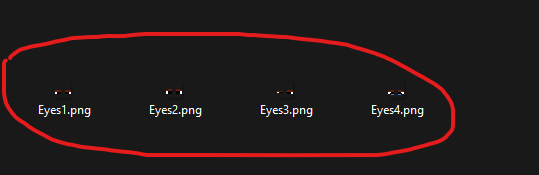
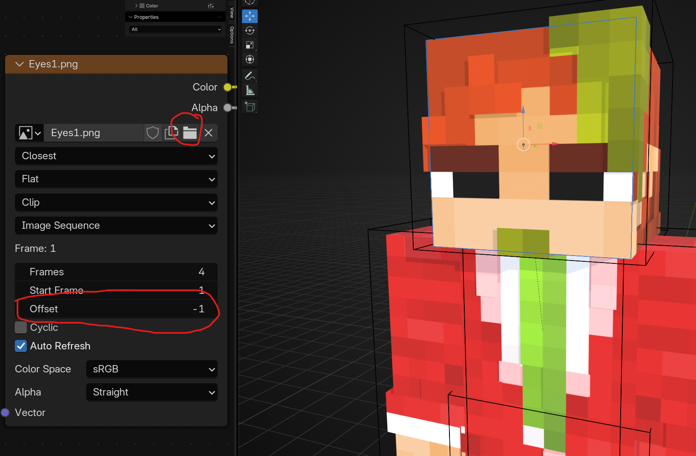

About
S_LR is a minimal, focused rig for blocky Minecraft-style characters. Designed to be simple to use: clear bone naming, per-arm Steve/Alex options, and quick setup scripts for visibility switching.
Per-arm settingsIndependent left/right arm configuration via setting bones.
Steve / Alex supportClassic and slim arms supported out of the box.
BetaEarly release — expect small rough edges, PRs welcome.
Guide: How to Change the Face
Step 1 — Pick a Face

Select the face object from the Face collection or directly in the viewport.
Step 2 — Create Your Texture
Draw your face with a resolution of 18 × 18 px. Save them as Face0, Face1, Face2… in a dedicated folder.
Step 3 — Assign & Switch
In the Shader Editor, click the folder icon and select multiple faces at once (hold Shift or Ctrl). Use the Offset slider to switch between faces.
License & Contributing
Open source. Contributions, issues and pull requests are welcome on the GitHub repo. Include concise reproduction steps for bugs.